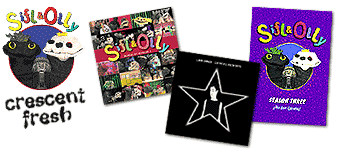

My brother, Liam, has been keeping me hopping designing products for his merchandise line. In the past few months, I've designed CD packaging for Sifl & Olly: Songs of Season 1 and Liam Lynch's We're All-Nighters (Liam's serious musical endeavors), DVD packaging for Sifl & Olly Season 3, as well as Sifl & Olly and "Crescent Fresh" t-shirts. Next on board are a Chester t-shirt, the "Welcome to Earth" DVD packaging, and Sifl & Olly: Songs of Season 2.